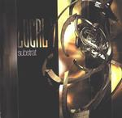

| Artist: | Local 7 |
| Title: | Substrat |
| Label: | Musea FGBG 4400 |
| Length(s): | 43 minutes |
| Year(s) of release: | 2002 |
| Month of review: | [04/2002] |
| 1) | Plasmodium Falciparum | 6.50 |
| 2) | Marin Sideral | 5.10 |
| 3) | Ranana | 4.25 |
| 4) | Etre Deux Gouttes De Pluie Acide | 4.21 |
| 5) | Un Lapin Sur Le Bateau | 4.10 |
| 6) | Caprice De Bebe | 4.40 |
| 7) | Le Chaffard | 4.38 |
| 8) | La Chapelle | 8.22 |
Marin Sideral is not unlike the previous track, although the percussion has been replaced with a more present bass line, sometimes even leading the way. What you would have called the bridge if this were a song (as opposed to an instrumental track) has a brief tension build up, which sounds pretty good.
Ranana starts with a brief industrial bit (as you would expect from early eighties Einstuerzende Neubauten), soon to move into a melodic guitar section. The drumming on this one is pretty choppy, not quite to my liking. The Build up of this track is pretty good, making it sound less like a track just flowing by.
Etre Deux Gouttes De Pluie Acide starts pretty melodic, to slowly accelerate into complexity, but of course always tempered by the melodic influences.
Un Lapin Sur Le Bateau is pretty guitarry (although keyboards do a good seamless back up), in a sort of not so interesting way.
Caprice De Bebe is bit more up tempo than most stuff, but beside that has the same guitaristics with some keyboards.
Le Chaffard is guitaristics with drums.
La Chapelle starts with some acoustic guitars, and is led by xylophone, giving a somewhat Gongy sound, moving into more guitaristics with some keyboards. The birdies, cows, and of course, they seem to be in vogue, sheep in the end create some tranquility, washed away by a final bit of guitaristics.
So, in the end I would say this is an album that goes by without being too offensive or interesting, okay as background music. I'm not quite sure it added something to the musical landscape, though.